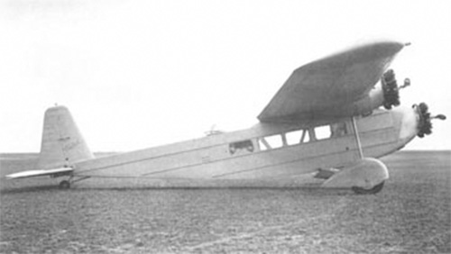

C.180

- Разработчик: Caudron
- Страна: Франция
- Первый полет: 1930
- Тип: Транспортный самолет
В конце 1920-х годов конструктор компании Société des Avions Caudron Поль Девиль (Paul Deville) разработал проект транспортного самолета для использования во французских колониях Caudron C.180. Это был двенадцатиместный цельнометаллический свободнонесущий высокоплан, оснащенный тремя девятицилиндровыми двигателями Lorraine 9Na Algol мощностью 300 л.с.
Единственный экземпляр самолета был построен в 1930 году. В декабре этого же года самолет был показан на Парижском авиасалоне. Заказов на самолет не поступило. Был изготовлен еще один схожий самолет - Caudron C.181, оснащенный тремя двигателями Gnone et Rhone K-7 той же мощности.
| Летно технические характеристики | |
|---|---|
| Модификация | C.180 |
| Размах крыла максимальный, м | 24.50 |
| Длина, м | 15.13 |
| Высота, м | 3.78 |
| Площадь крыла, м2 | 70.00 |
| Масса, кг | |
| - пустого самолета | 2600 |
| - нормальная взлетная | 5000 |
| Тип двигателя | 3 ПД Lorraine 9Na Algol |
| Мощность, л.с. | 3 х 300 |
| Максимальная скорость у земли, км/ч | 225 |
| Практическая дальность, км | 1000 |
| Практический потолок, м | 3450 |
| Экипаж, чел | 2 |
| Полезная нагрузка: | до 10 пассажиров |